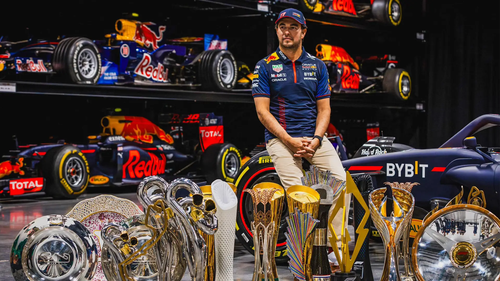

Sergio "Checo" Perez

Picture Information:
Description of the image: The king of street circuits himself, Checo Perez, posing with all of Red Bull's F1 trophies and retired F1 cars. This image doesn't just show him off as a great driver, but the Red Bull team as a whole has come so far in becoming dominant.
Image file type information: PNG and JPG background file
Why did you choose the image? The Mexican driver has done a lot for the Red Bull team in the past couple of years, and his accomplishments should be celebrated.
Sources: